Hand hooked rugs in linen and wool.
Fiber artist, demonstrator, presenter and student. Tracy teaches classes to beginner and intermediate students in her home, libraries, art centers and at fiber festivals.
Or call Tracy at 765-967-2492
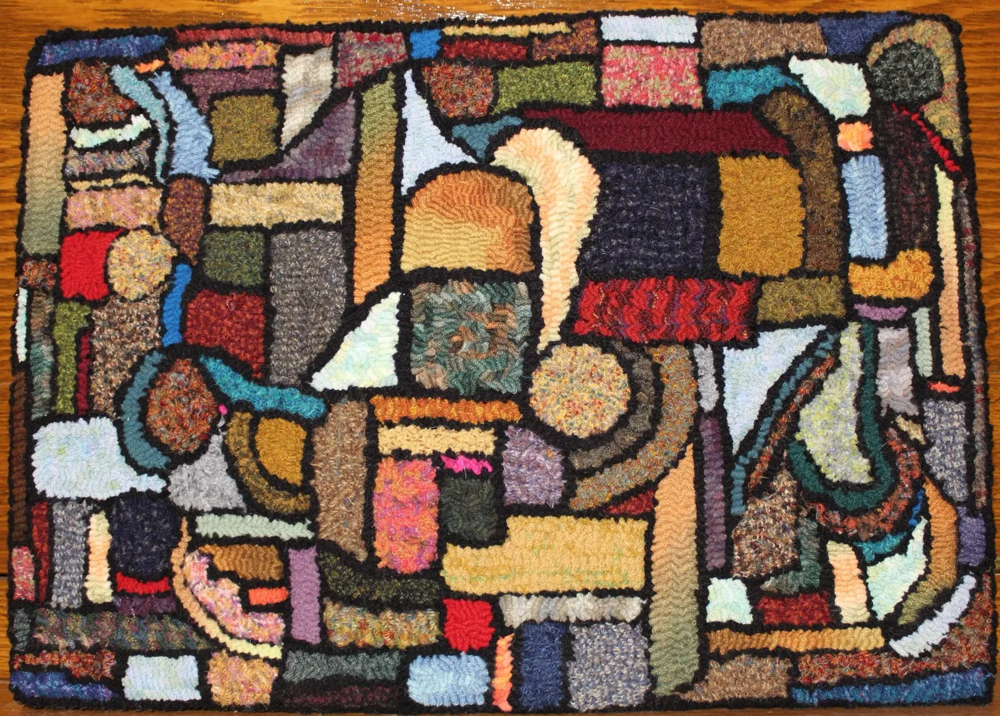
- Indiana Artisan
- Hooking since the 1999 Indiana State Fair
- Teaching classes since 2001
- 85% recycled wool garments
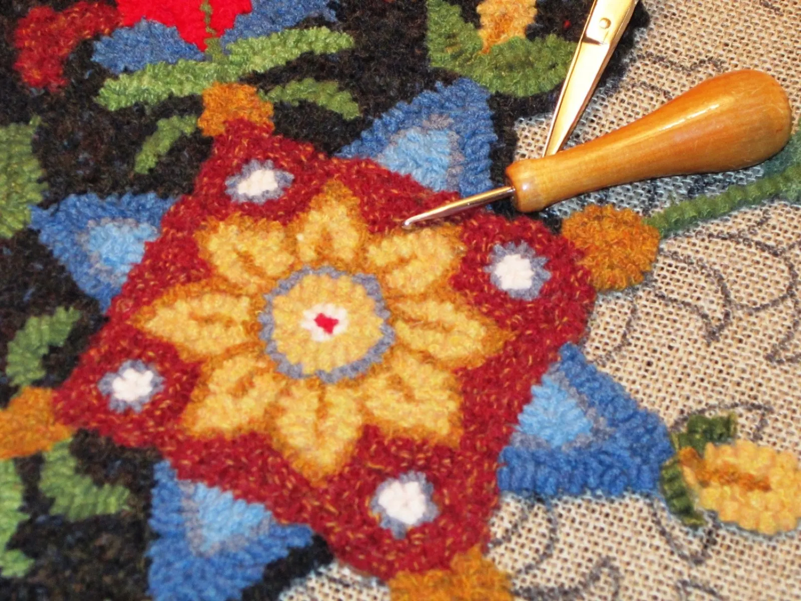
On the frame, pattern still showing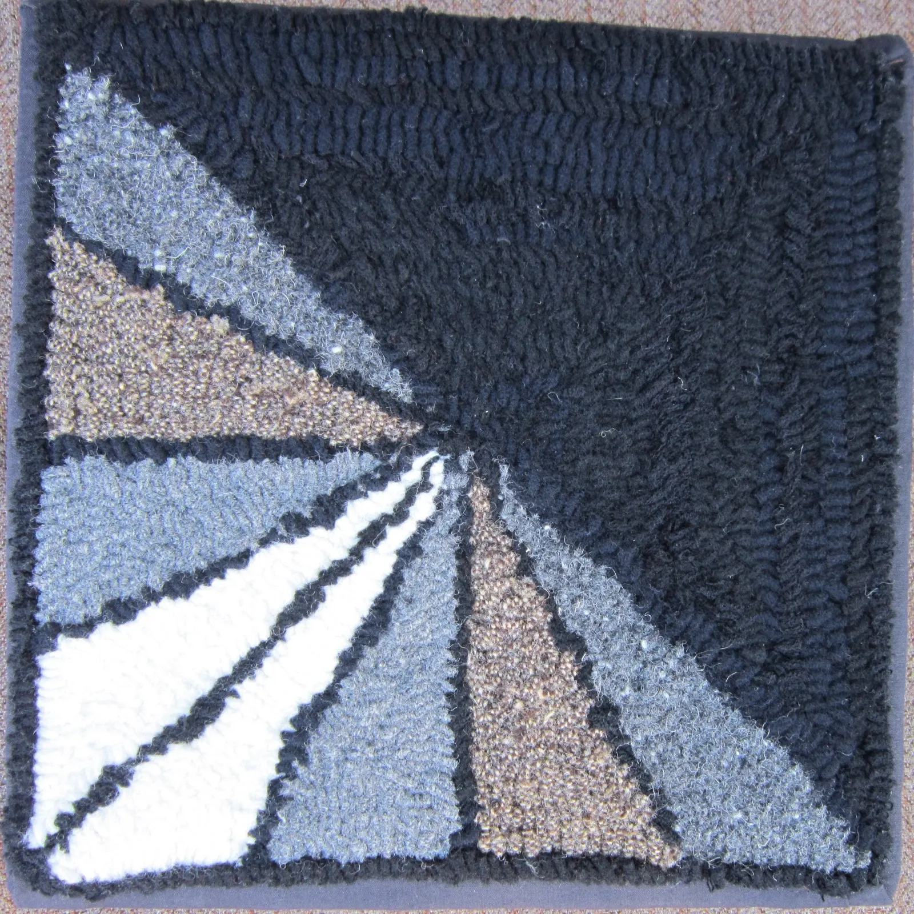
When I hook an area, I will sometimes stray from the actual pattern I have drawn and the piece starts to develop its own personality.Tracy C. Burns, artist statement
I use linen and 100% wool fabric to create my work. I cut the fabric into 18″ strips, and with a crochet style hook with a handle, I pull the fabric through the pattern drawn onto the linen. There is just something about geometrical and minimalist abstracts: the textures and colors of the wool guide me.
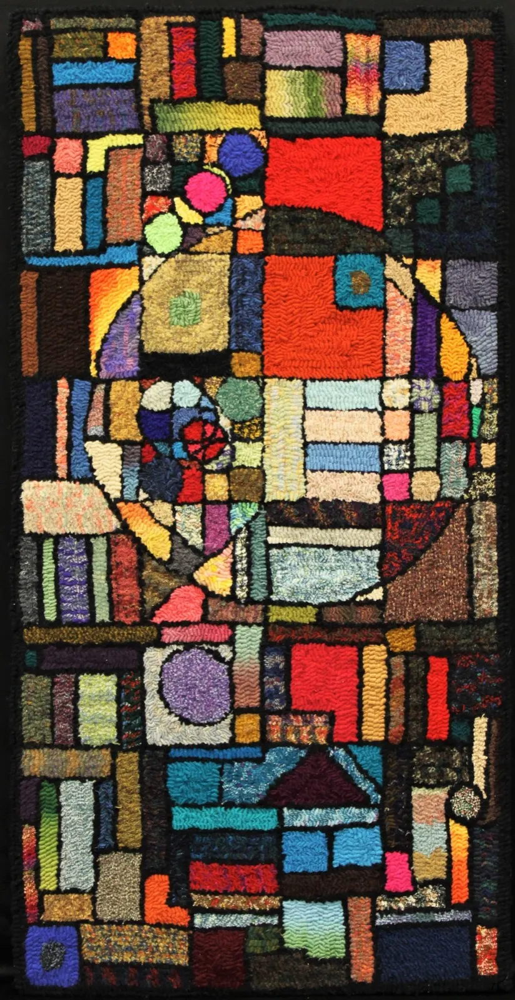
Stained Glass AbstractA kitchen rug that became a celebrity.
After many hours of hooking, I decided this piece was destined for the floor in front of my kitchen sink: I had run out of the scrap wool I was using, and it had not become what I envisioned. A good friend at our art association twisted my arm and told me it needed to be entered in an art show.
- 1st placeMy first juried show
- Judge's ChoiceUnion City Arts Festival Juried Show
- Grand ChampionMooreland Fair Open Show
- PublishedTen Thousand Loops II, by Judy Taylor
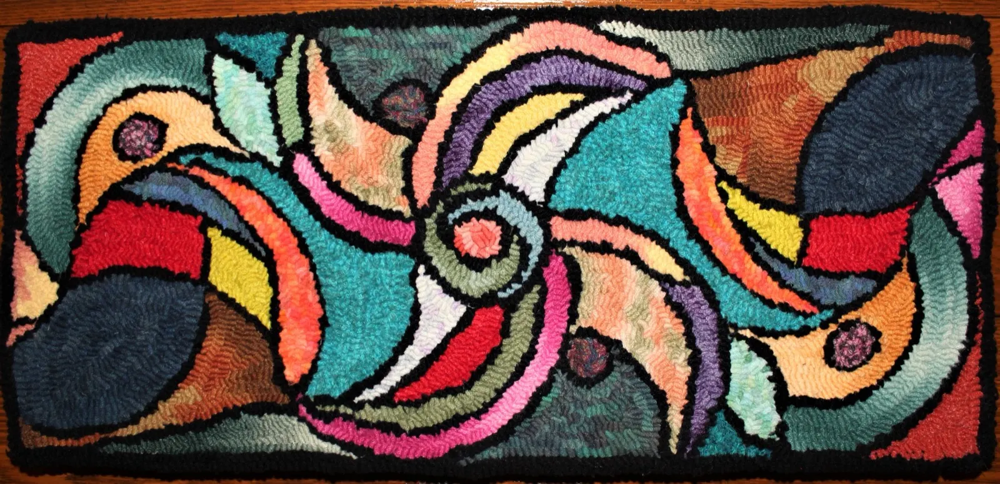
Volution, 9″ x 20″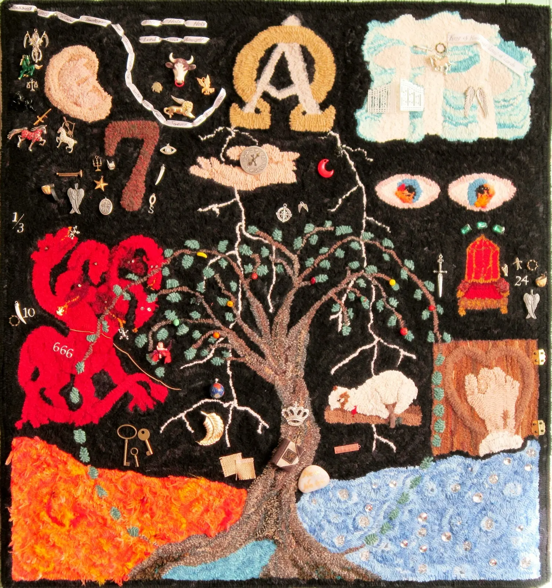
Revelation RugLearn to hook a rug, start to finish.
Tracy teaches beginner and intermediate classes, in her home or on location, one on one or in groups. These designs are easy enough to introduce rug hooking, and become table or candle mats, trivets, wall hangings or pillows.
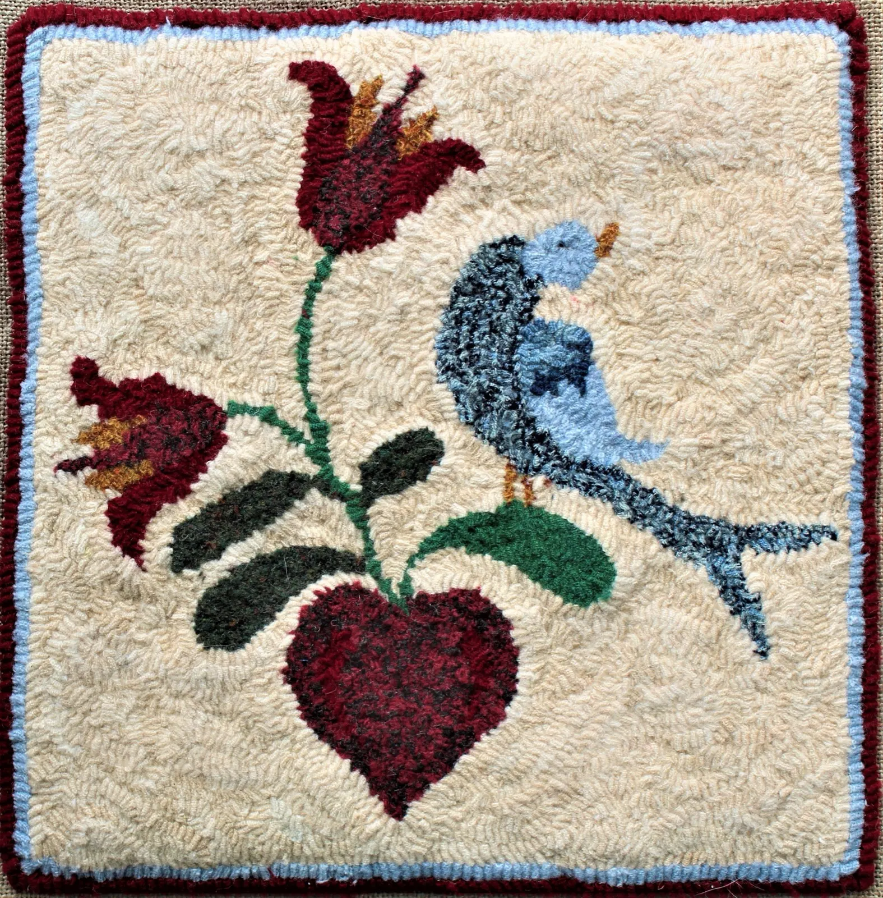
Fraktur Bird, Tulip and Heart
Beginner and intermediate, 12″ x 12″
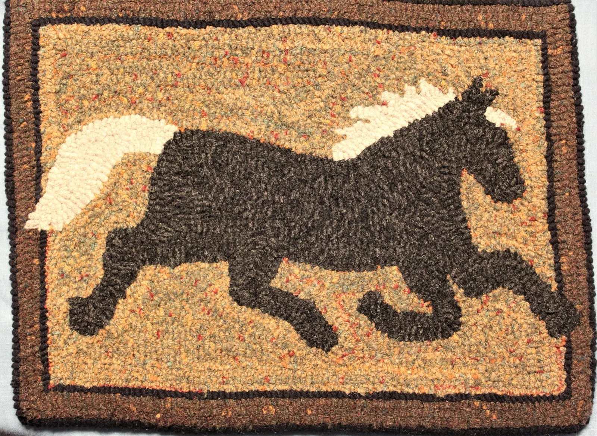
Horse in the Borders
Beginner, 11″ x 7 1/4″
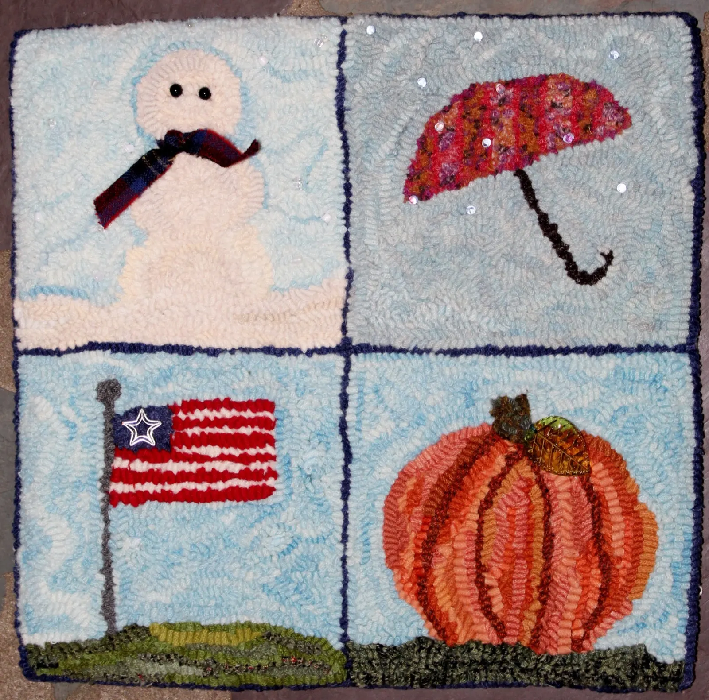
4 Seasons
Glass and metal bead embellishments, 12″ x 12″
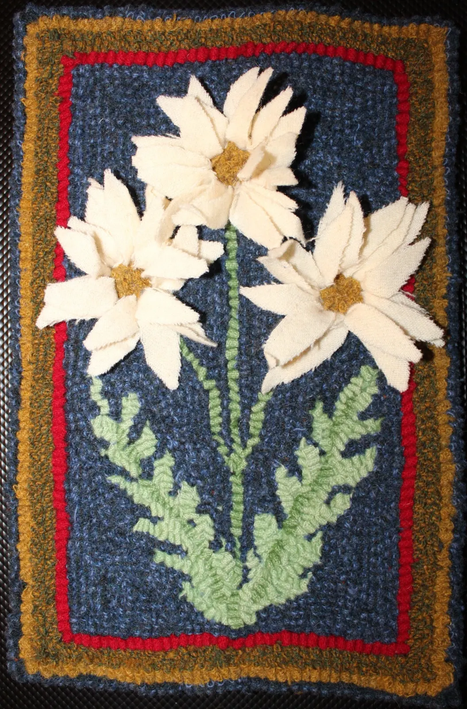
Proddy Daisies
Petals prodded in relief
How classes work
- Length
- Most classes run 6 to 8 hours: a single day with a lunch break, or two hour classes over 3 to 4 weeks.
- Class fee
- $35.00 to $150.00, depending on the venue and the length of the class.
- Materials
- $40.00 to $203.00, depending on the size of the project.
- Colors
- Hand dyed, recycled and new wool, so colors vary. Ask for certain colors and Tracy will come as close as she can.
In your materials kit
- Hand drawn pattern on linen
- Pre-cut wool strips
- Hook
- Stretcher frame
- Binding tape for a mat
- Embellishments if needed
- Printed instructions
- Color photo
- Notebook and pen
- Small bag for your hook
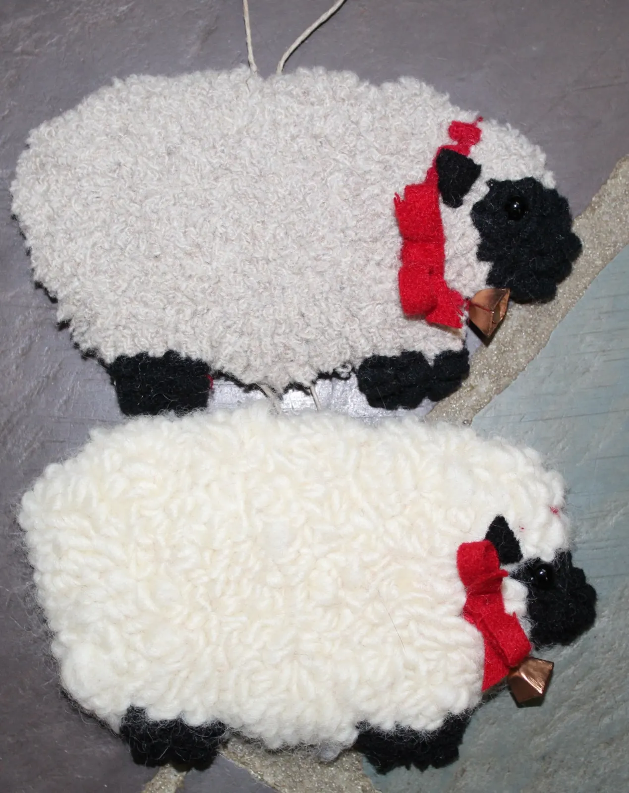
Sheep ornaments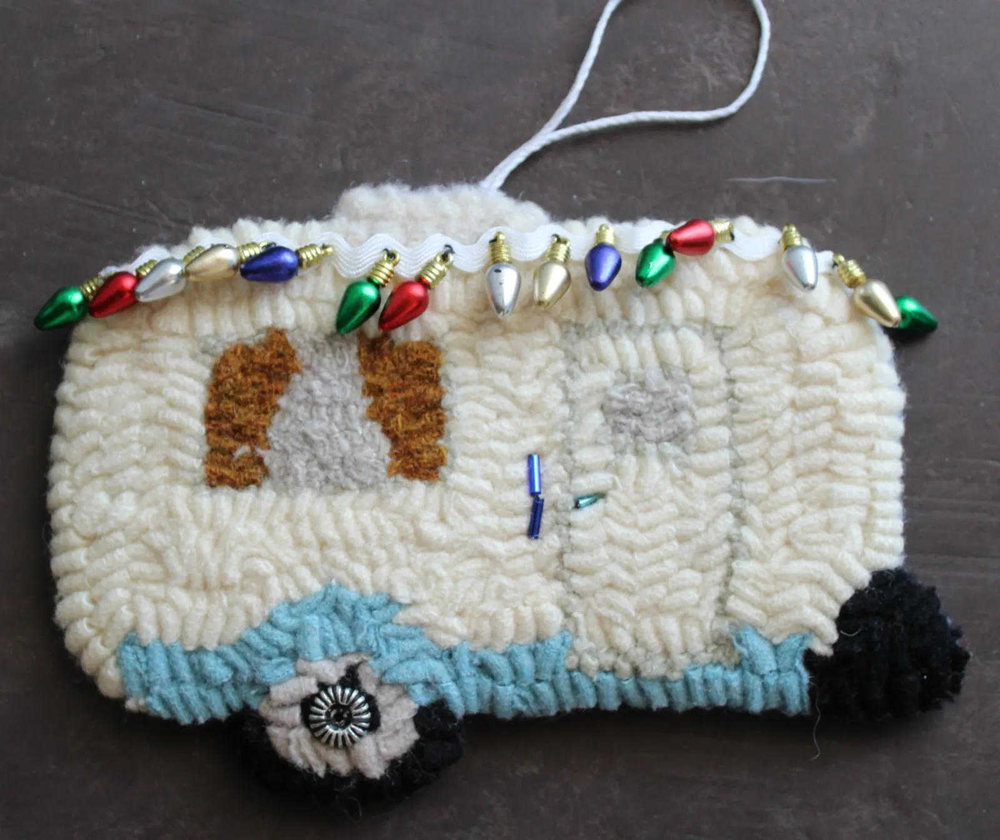
Ornaments, mats and one of a kind pieces.
Each ornament is one of a kind and takes approximately 8 to 10 hours, in a 9 step process. Candle mats and mug rugs are 100% wool, naturally fire resistant, and wick away moisture. Find them locally at The Village Forager, Whitewater Valley Arts Association and Indiana Artisan.